If you don't want to print now,
Inference
Statistical inference refers to statistical techniques for obtaining information about a population parameter (or parameters) from a random sample. There are two branches of inference:
Estimation
Point estimates and confidence intervals give answers to questions of the form:
What parameter values would be consistent with the sample data?
Hypothesis tests
This chapter deals with a related type of question:
Are the sample data consistent with some statement about the parameters?
Errors and strength of evidence
A single random sample can rarely provide enough information about a population parameter to allow us to be sure whether or not any statement (hypothesis) about that parameter will be true. The best we can hope for is an indication of the strength of the evidence against it.
Randomness in sports results
Although we like to think that the 'best' team wins in sports competitions, there is actually considerable variability in the results that can only be explained through randomness. For example when two teams play a series of matches, the same team rarely wins all matches.
English Premier Soccer League, 2008/09
In the English Premier Soccer league, each team plays every other team twice (home and away) during the season. Three points are awarded for a win and one point for a draw. The table below shows the wins, draws, losses and total points for all teams at the end of the 2008/09 season.
Team |
Wins | Draws | Losses | Points | |
|---|---|---|---|---|---|
| 1. 2. 3. 4. 5. 6. 7. 8. 9. 10. 11. 12. 13. 14. 15. 16. 17. 18. 19. 20. |
Manchester_U Liverpool Chelsea Arsenal Everton Aston_Villa Fulham Tottenham West_Ham Manchester_C Wigan Stoke_City Bolton Portsmouth Blackburn Sunderland Hull_City Newcastle Middlesbrough West_Brom_Albion |
28 25 25 20 17 17 14 14 14 15 12 12 11 10 10 9 8 7 7 8 |
6 11 8 12 12 11 11 9 9 5 9 9 8 11 11 9 11 13 11 8 |
4 2 5 6 9 10 13 15 15 18 17 17 19 17 17 20 19 18 20 22 |
90 86 83 72 63 62 53 51 51 50 45 45 41 41 41 36 35 34 32 32 |
Were all teams evenly matched?
A simulation can help us to investigate this question. We could be used to generate results from all 380 matches in the season for evenly matched teams, each result having probabilities 0.372, 0.372 and 0.255 of being a win, loss or draw for the home team. (A proportion 0.255 of games in the actual league resulted in draws.)
If there are differences between teams, we would expect the worst teams to have very few points at the end of the season and the best to have many. On the other hand, for evenly matched teams, we would expect all 20 finals points to be similar. The spread of final points in the league table should tell us something about whether the teams are evenly matched.
In the actual league table, the standard deviation of the final points for the 20 teams was 18.236. The diagram below shows the standard deviations in 200 simulated league tables with evenly matched teams.
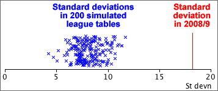
The spread of points in the actual league table was much higher than the spread that would be likely for evenly matched teams, so:
There is strong evidence that the top teams are 'better' than the bottom teams.
Is a population proportion equal to 0.8, or is it lower?
Consider a random sample of n = 100 values from a population in which it is claimed that the probability of success is at least 0.80.
Is an observed count of x = 72 successes low enough to throw doubt on the claimed probability of success, 0.80?
Simulation
We can perform a simulation with probability 0.80 of success to generate a random sample 100 successes and failures. The diagram below shows the numbers of successes in 200 such simulations.
If the probability of success was really 0.80, there would be approximately 10/200 = 5% chance of 72 or successes being observed. Since this is low,
There is moderately strong evidence that the probability of success is less than 0.80 — observing only 72 successes would be unlikely if the probability really was 0.80.
Does a random sample have mean 520?
In an industrial process, some measurement, X, is normally distributed with standard deviation σ = 10. Its mean should be µ = 520 but can drift from this, so samples of n = 10 measurements are regularly collected as part of quality control.
If one such sample had mean 529, does the process need to be adjusted? The question can be reexpressed as:
If the underlying population mean was really µ = 520, what is the chance a sample of 10 values having a mean as far from 520 as 529?
Simulation
We can base our answer on the distribution of the sample mean, assuming that X has a normal distribution with µ = 520 and σ = 10. Simulations of 10 values from this distribution can be used to get an approximate distribution.
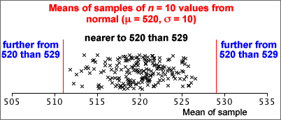
From the 200 simulated samples above, it seems very unlikely that a sample mean of 529 would have been recorded if the process meanhad been µ = 520. We therefore conclude that:
There is strong evidence that the process no longer has a mean of µ = 520 and needs to be adjusted.
Simulation and randomisation
Simulation and randomisation both involve randomly generated data sets.
Randomisation of samples from two populations
Consider random samples from two populations. If these populations are identical, any of the sampled values could have equally belonged to either population. Random variations of the data can be generated by randomly allocating the values to the two samples.
The diagram below gives an example of two-group data and a random allocation of the 101 values to the two groups.

Test for equal population means
In the example above, the mean for Group A was 0.902 higher than that for Group B. To examine whether the underlying population means are equal, we can find how far apart the sample means would be in randomised variations of the data.
The diagram below shows the difference between the Group A and Group B means for 100 randomised variations of the data.

A difference between sample means as large as that recorded would be unusual if both underlying populations were the same, so
We conclude that there is strong evidence that the population means for the two groups are different.
Another example using randomisation
Randomisation can be used to assess whether two variables are uncorrelated.
| Variable | |
|---|---|
| Y | X |
| 65 60 58 57 55 49 46 43 42 40 39 37 36 |
63 62 41 41 50 51 51 34 32 45 36 41 53 |
Are the variables uncorrelated in the underlying population?
Randomisation
If Y and X were unrelated, any permutation of the values of X would have been equally likely, so we can generate random variations of the data by shuffling the values of X between the individuals.
The correlation between Y and X in the data was 0.537. To assess whether such a large correlation could have arisen if Y and X were unrelated, we can use randomisations to investigate the distribution of the correlation coefficient when they are unrelated. The diagram below shows the correlation coefficients from 200 randomisations of the data.

Since there would only be a 7/200 = 3.5% chance of a sample correlation being as far from zero as that observed, we can conclude that:
There is moderately strong evidence that there is a real relationship between Y and X (in the underlying population).
A general framework
You may find it difficult to spot the common theme in the examples in this section, but they are all examples of hypothesis testing and fit into a common framework that is used for all hypothesis tests.
Data, model and question
We assess whether the null hypothesis is true by asking ...
Are the data consistent with the null hypothesis?
| p-value | Interpretation |
|---|---|
| over 0.1 | no evidence that the null hypothesis does not hold |
| between 0.05 and 0.1 | very weak evidence that the null hypothesis does not hold |
| between 0.01 and 0.05 | moderately strong evidence that the null hypothesis does not hold |
| under 0.01 | strong evidence that the null hypothesis does not hold |
Soccer league in one season
Proportion
Process mean
Comparison of groups
Correlation coefficient
Inference and random samples
In the rest of this chapter, we assume that the observed data are a random sample from some population. Inference asks questions about characteristics of the underlying population distribution — unknown population parameters.
The null and alternative hypotheses specify values for the unknown parameters.
Categorical populations
For categorical populations, the unknowns are the population probabilities for the different categories. We focus on one category that is of particular interest ('success').
The null and alternative hypotheses are specified in terms of the probability of success, π.
Test statistic
A test about a probability, π, could be based on the corresponding sample proportion, p, but it is more convenient to use the number of successes, x, rather than p since we know its distribution,
X ~ binomial (n , π)
P-value
The p-value is the probability of getting such an 'extreme' set of data if the null hypothesis is true. Since we know the binomial distribution of X when the null hypothesis holds,
The p-value is a sum of binomial probabilities
Note that the p-value can be obtained exactly without need for simulations or randomisation.
Example
In 100 values from a categorical population, 72 successes were observed. Is this consistent with probability π = 0.80 of success, or is the probability of success lower?
H0: π = 0.80
HA: π < 0.80
If the null hypothesis is true, we know the distribution of the number of successes, X,

The p-value for the test is the probability of observing 72 or fewer successes, assuming that the null hypothesis holds. Since this is 0.0342, we conclude that there would be little chance of seeing as low a number of successes if π = 0.80, so
There is moderately strong evidence that π < 0.80
Telepathy experiment
In a telepathy experiment, one subject selects 90 cards with random shapes (circle, square or cross) and attempts to 'send' the shapes to another subject who is out of sight. The subject correctly guesses 36 shapes.
H0: π = 1/3 (guessing)
HA: π > 1/3 (telepathy)
If the subject is guessing, the number of correct choices will be binomial with π = 1/3 and n = 90.
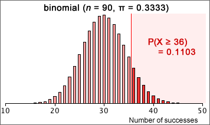
The p-value for the test is the probability of getting as 'extreme' a count as was observed if the subject guesses, 0.1103. Since this is high, we conclude that there is no evidence of telepathy from the data.
Interpretation of p-values
A p-value only tells you whether the data are consistent with the null hypothesis or are inconsistent with it. From a very small p-value, we can conclude that the null hypothesis is probably wrong. However a high p-value does not mean that the null hypothesis is correct, only that the observed data are consistent with it. In the telepathy example, we could never be sure that π was not very very slightly different from 1/3.
A hypothesis test should never conclude that the null hypothesis is correct.
For the telepathy example, the correct interpretation of p-values would be...
| p-value | Conclusion |
|---|---|
| p > 0.1 | No evidence against π = 1/3. |
| 0.05 < p < 0.1 | Only slight evidence against π = 1/3. |
| 0.01 < p < 0.5 | Moderately strong evidence against π = 1/3. |
| p < 0.01 | Strong evidence against π = 1/3. |
P-value for a one-tailed test
Consider a test of the hypotheses
H0 : π = π0
HA : π < π0
where π0 is a constant of interest. The following diagram shows how the p-value is found:

Since the probabilities in one tail of the distribution are added, this is called a one-tailed test.
P-value for a two-tailed test
If the alternative hypothesis allows either high or low values of x, the test is called a two-tailed test,
H0 : π = π0
HA : π ≠ π0
The p-value is then double the smaller tail probability since values of x in both tails of the binomial distribution would provide evidence for HA.
Example
In a population of people, a proportion 0.574 have blood group O. In a sub-group of this population, a sample of 54 individuals were tested and 26 of these had blood group O. Is there any evidence that they differ from the main population?
This question can be expressed with the hypotheses
H0 : π = 0.574
HA : π ≠ 0.574
If the sub-group had the same proportion with blood group O as the main population, the number out of 54 with this blood group would have the binomial distribution below.
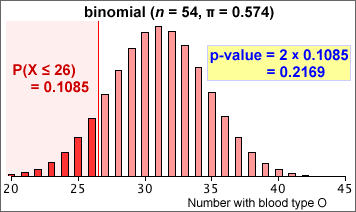
There is a probability 0.1085 of getting 26 or fewer, but large sample numbers with blood group O would also throw doubt on the null hypothesis, so the p-value is double the low-tail probability, 0.2169.
From the large p-value, we conclude that there is no evidence of a difference between the sub-group and the main population.
Normal approximation
When the sample size, n, is large, a normal distribution may be used as an approximation to the binomial.

Approximate p-value
We again test the hypotheses
H0 : π = π0
HA : π < π0
If n is large, the approximate normal distribution for x can be used to obtain the p-value for the test.

Home-based businesses owned by women
A study found that 369 out of 899 sampled home-based businesses were owned by women. Are they less likely to be owned by females than by males? The hypotheses are...
H0 : π = 0.5
HA : π < 0.5
where π = P(owned by female).

The p-value for the test is the probability of 369 or fewer from this distribution. Since this probability is virtually zero, we conclude that π is almost certainly less than 0.5.
Continuity correction (advanced)
The approximate p-value could be found by comparing the z-score for x,
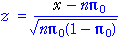
with a standard normal distribution. Since x is discrete,
P(X ≤ 369) = P(X ≤ 369.5) = P(X ≤ 369.9) = ...
To find this tail probability, any value of x between 369 and 370 might have been used when evaluating the z-score. The p-value can be more accurately estimate by using 369.5. This is called a continuity correction.
The continuity correction involves either adding or subtracting 0.5 from the observed count, x, before finding the z-score.
Difference between parameter and estimate
If the value of a parameter specified by the null hypothesis (e.g. a population proportion, π0) is close to the corresponding sample statistic (e.g. the sample proportion, p) then there is no reason to doubt the null hypothesis. However if they are far apart, the data are not consistent with the null hypothesis and we should conclude that the alternative hypothesis holds.
A large distance between the estimate and hypothesized value gives evidence against the null hypothesis.
Statistical distance
To help assess this difference, we express it as a number of standard errors since we know from the 70-95-100 rule of thumb that that 2 (standard errors) is a large distance, 3 is a very large distance, and 1 is not much.
For a proportion, the number of standard errors is

In general, the statistical distance of an estimate to a hypothesised value of the underlying parameter is

Values more than 2, or less than -2, suggests that the hypothesized value is wrong. However if z is close to zero, p is reasonably close to π0 and we should not doubt the null hypothesis.
Test statistic and p-value
The statistical distance of an estimate to a hypothesised value of the underlying parameter is

If the null hypothesis holds, z has approximately a standard normal distribution and it can be used as a test statistic for tests about the parameter. The p-value can be determined from the tail areas of this standard normal distribution.

For a two-tailed test, the p-value is the red tail area and can be looked up using either normal tables or in Excel.
Example
We again examine a data set in which 369 out of 899 home-based businesses were owned by women. Are less than 50% of such businesses owned by women?
H0 : π = 0.5
HA : π < 0.5
The diagram below shows how the 'statistical distance' of the sample proportion from 0.5 is calculated.

The p-value for the test is the lower tail area of the standard normal distribution and is virtually zero here, so we again conclude that it is almost certain that less than 50% of such businesses are owned by women.
Using a 'statistical distance' to test a proportion gives a p-value that is identical to the p-value based on a normal approximation to the number of successes without a continuity correction. (The p-value is slightly different if a continuity correction is used.) However this approach will be used to test many different kinds of parameter in later sections.
(The procedure will be refined slightly when applied to situations where the standard error of the estimate must itself be estimated from the sample data. A t distribution will be used instead of a standard normal distribution.)
Tests about numerical populations
The most important characteristic of a numerical population is usually its mean, µ. Hypothesis tests therefore usually question the value of this parameter.
Null and alternative hypotheses
Two-tailed tests about a population mean involve the hypotheses
H0 : μ = μ0
HA : μ ≠ μ0
where µ0 is the constant that we think may be the true mean.
In a one-tailed test, the alternative hypothesis involves only high (or low) values of µ, such as
H0 : μ = μ0
HA : μ > μ0
Hypotheses and p-value
We initially assume that the population standard deviation σ is a known value. The null hypothesis is usually
H0 : µ = µ 0
The test is based on the sample mean,  .
This
has a distribution that is approximately normal and has mean and standard
deviation
.
This
has a distribution that is approximately normal and has mean and standard
deviation
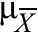 = μ
 =
= 
Since the distribution of  is fully known when H0 is true, a tail area of its distribution
gives the p-value for the test. The tail of the distribution to use
depends on the form of the alternative hypothesis.
is fully known when H0 is true, a tail area of its distribution
gives the p-value for the test. The tail of the distribution to use
depends on the form of the alternative hypothesis.

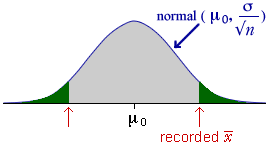
Statistical distance and p-value
If σ is a known value, the calculation to find the p-value for testing the mean can be expressed in terms of the general formula for the statistical distance between a parameter and its estimate,

In the context of a test about means,

Since z has a standard normal(0, 1) distribution when the null hypothesis holds, it can be used as a test statistic and the p-value for the test can be determined from its tail areas.
For a two-tailed test, the p-value is the red tail area.
Example
The mean of a sample of n = 30 values is 16.8. Does the population have mean µ = 18.3 and standard deviation σ = 7.1, or is the mean now lower than 18.3?
H0 : µ = 18.3
HA : µ < 18.3
The p-value for the test is shown below:
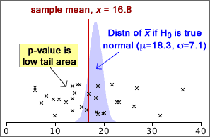
The p-value can be evaluated using the statistical distance of 16.8 from 18.3 (a z statistic),

The p-value is reasonably large, meaning that a sample mean as low as 16.8 would not be unusual if µ = 18.3, so there is no evidence against µ = 18.3.
Test statistic if σ is unknown
In practical problems, the value of σ is rarely known so we cannot use
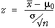
as a test statistic — it cannot be evaluated even when H0 is true. Instead, we must use a closely related type of 'statistical distance' between the sample mean and µ0,

where s is the sample standard deviation. This test statistic no longer has a normal distribution — it has greater spread due to the extra variability that results from estimating s, and has a standard distribution called a t distribution with (n - 1) degrees of freedom.

Finding a p-value from the t distribution
When testing the value of µ when σ is unknown, we use the test statistic

This has a t distribution (with n − 1 degrees of freedom) when H0 is true, so the p-value is found from a tail area of this distribution.
One-tailed test
H0 : μ = μ0
HA : μ < μ0
The steps for testing these hypotheses are shown in the diagram below.

Example
Consider a sample of n = 13 values with mean  = 16.14
and standard deviation s = 2.15. A test for whether the population mean
is more than 15.0 uses the hypotheses:
= 16.14
and standard deviation s = 2.15. A test for whether the population mean
is more than 15.0 uses the hypotheses:
H0 : µ = 15
HA : µ > 15
Since the population standard deviation, σ, is unknown, the test must be based on a t statistic.

From the p-value, we conclude that there is moderately strong evidence that µ is greater than 15.
Two-tailed test
H0 : μ = μ0
HA : μ ≠ μ0
If the alternative hypothesis allows both low and high values of µ, then the p-value is the sum of two tail areas.

Testing for a difference between two means
The difference between two groups that is of most practical importance is a difference between their means.
H0 : μ2 − μ1 = 0
HA : μ2 − μ1 ≠ 0
The summary statistic that throws most light on these hypotheses is the difference
between the sample means,  .
Testing therefore involves assessment of whether this difference is unusually
far from zero.
.
Testing therefore involves assessment of whether this difference is unusually
far from zero.

As with all other hypothesis tests, a p-value near zero gives evidence that the null hypothesis does not hold — evidence of a difference between the group means.
Example

General properties of p-values
A statistical hypothesis test cannot provide a definitive answer about whether two groups have different means. The randomness of sample data means that p-values are also random quantities.
It is possible to get a small p-value (supporting HA) when H0 is true, and it is possible to get a large p-value (consistent with H0) when HA is true.
There is some chance of being misled by an 'unlucky sample.
Effect of increasing the sample size
One- and two-tailed tests for differences
In a two-tailed test, the alternative hypothesis is that the two population means are different. A one-tailed test arises when we want to test whether one mean is higher than the other (or lower than the other).

Test statistic, p-value and conclusion
Consider a test for the hypotheses,
H0 : μ1 = μ2
HA : μ1 > μ2
The alternative hypothesis is only supported by very small values of  .
This also corresponds to small values of the test statistic t ,
so the p-value is the lower tail probability of the t distribution.
.
This also corresponds to small values of the test statistic t ,
so the p-value is the lower tail probability of the t distribution.

A small p-value is interpreted as giving evidence that H0 is false, in a similar way to all other kinds of hypothesis test.
Examples

Properties of p-values
We again stress that a statistical hypothesis test cannot provide a definitive answer. The randomness of sample data means that p-values are also random quantities, so there is some chance of us being misled by an 'unlucky' sample:
Two-tailed test
H0 : π1 = π2
HA : π1 ≠ π2
For this test, the steps involved in obtaining a p-value are:

The p-value is interpreted in the same way as for all previous tests. A p-value close to zero is unlikely when H0 is true, but is more likely when HA holds. Small p-values therefore provide evidence of a difference between the population probabilities.
One-tailed test
In a 1-tailed test, the alternative hypothesis is
HA : π1 − π2 > 0 or HA : π1 − π2 < 0
The test statistic is identical to that for a 2-tailed test and the p-value is obtained in a similar way, but it is found from only a single tail of the standard normal distribution.
Alternative test statistic
Since π1 and π2 are equal if H0 is true, the overall proportion of successes, p, can be used in the formula for the standard error of p2 - p1.

This refinement makes little difference in practice, so the examples below use the 'simpler' formula that we gave earlier.
Two-tailed example
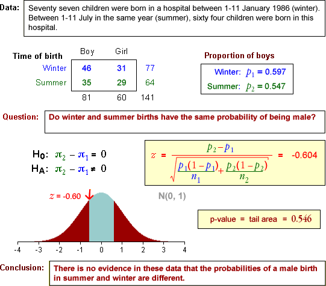
One-tailed example
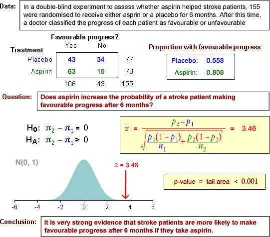
Approach (paired t-test)
Testing whether two paired measurements, X and Y, have equal means is done in terms of the differences
D = Y - X
The test is then expressed as
H0: µD = 0
HA: µD ≠ 0
or a one-tailed variant. The hypotheses are therefore assessed with a standard univariate t-test using test statistic
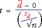
This is compared to a t distribution with n - 1 degrees of freedom to find the p-value.
Example
The diagram below illustrates a 2-tailed test for equal means, based on n = 15 paired observations.

From the p-value, we conclude that there is very strong evidence that the means for Y and X are different.
Choice between paired data or two independent samples
It is sometimes possible to answer questions about the difference between two means by collecting two alternative types of data.
If the individuals in the 2 groups can be paired so that the pairs are relatively similar, a paired design gives more accurate results.
Matched pairs in experiments
In experiments to compare two treatments, it may be possible to group the experimental units into pairs that are similar in some way. These are called matched pairs. If the two experimental units in each pair are randomly assigned to the two treatments, the data can be analysed as described in this section.
The difference between the treatments is estimated more accurately than in a completely randomised experiment.